Four Papers, Taught From Scratch — with diagrams
What this doc is. You co-authored these four papers but were not deep in the weeds. This page teaches them from the ground up — the problem, the machinery, the intuition — so the mechanism feels like yours when Versley probes. It pairs with Own Papers — Ground-Truth Defense (the exact numbers and the full skeptical Q&A); here the goal is understanding. Emphasis is on Diffusion Weights, with two short primers so the generative-model papers actually click. Read each primer before the paper it precedes.
The four papers at a glance
| Paper | The one idea | Your role | Thesis angle |
|---|---|---|---|
| TwinRouterBench | Score LLM routing per call, with tier labels verified by full-trajectory replay | 3rd of 17 | Route the right model per step |
| MERA | Route inside a live agent, with a verifier-fallback so a cheap pick cannot silently break quality | 3rd of 7 | Adapt the serving policy safely |
| Diffusion Weights | Forecast a future-epoch weight state with a diffusion U-Net instead of running SGD | author (under review) | Cheapen training itself |
| Reverse Imaging | Recover sequence-invariant spin maps with a diffusion prior, then re-render any MRI sequence | 4th of 8 | Extract the invariant, synthesize the rest |
One thesis ties them: AI moved from a scaling race to a systems race — you win by spending a fixed model budget well, not by training something bigger.
Primer A · LLM routing in four minutes
The problem in one sentence. You have a pool of models running from cheap-and-weak to expensive-and-strong. For each request, you want the cheapest model that still gets the job done — not the strongest one every time, because the strong one costs 10x to 50x more and most requests don't need it. That choice, made per request, is routing.
Four words carry the whole idea. Learn these and the rest follows:
- Tier — an ordered capability class (think
low / mid / mid_high / high), where each tier maps to one or more concrete models in your pool. A tier is a rung on a ladder, not a single model. - Cascade — the simplest routing strategy: try the cheap model first, check the answer, and escalate to a stronger one only if it fails.
- Router — a small, fast model that looks at the input and predicts which tier you'll need, so you don't have to try-and-fail your way up the ladder.
- Cost-vs-quality Pareto — the frontier of best-possible trade-offs. A good router pushes you toward it: same quality for less money, or more quality for the same money. Anything off the frontier is wasted spend.
Now the distinction that everything hinges on. Older router benchmarks (RouterBench, RouterArena) score routing at the query level: one prompt goes in, one model is picked, one answer comes out and gets graded. Clean, but it misses where routing actually lives.
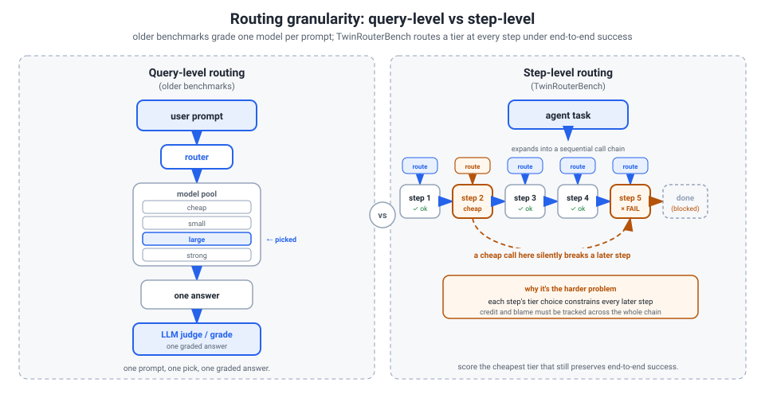
Real agentic work is step-level. One user request — fix this bug, answer this multi-hop question — fires many model calls in sequence: read the code, plan, edit, run tests, read the trace, edit again. A too-cheap call at step i can produce a subtly wrong edit that doesn't break until step i+5, where the whole task silently fails. The cheap call looked fine in isolation; it poisoned a later step. Query-level scoring is blind to this. This is the gap TwinRouterBench attacks — it scores routing per call, given the real prefix the router would actually see before that call.
Why not just let the frontier model route itself? Because step difficulty isn't visible from query-level intuition — even to the best model. In TwinRouterBench, Opus predicts "high" for only 7 of 147 verified-high SWE steps, and fails all 40 SWE trajectories when used as its own router. The strong model cannot tell which of its own steps were actually hard. You need a router trained on what really broke downstream.
One line on honest cost accounting. A router that saves money but breaks the task hasn't saved anything — the user still needs the job done, so you've destroyed value, not created it. Honest accounting must therefore charge failures, not just credit the cheap calls. (This is exactly TwinRouterBench's failure-aware CostSave metric.)
How to say it in the room: "Routing is picking the cheapest model that still resolves the task. The old benchmarks score one prompt, one pick. The real problem is step-level — inside one agent run, a cheap call early can silently break a later step — and even the frontier model can't route itself there."
Both of your routing papers live here. TwinRouterBench is the benchmark that measures step-level routing honestly; MERA is a framework that does step-level routing safely inside a live agent.
Paper 1 · TwinRouterBench — the honest router benchmark
Start here. TwinRouterBench is a benchmark, not a cost-cutting method. It scores LLM routing — the act of picking which model answers a given call — but it does it in a place nobody else does: inside a long-horizon agent, one call at a time. You are 3rd of 17 authors, listed as Independent Researcher. The two equal-contribution leads are Pei Yang and Wanyi Chen; Tianyu Shi is corresponding. So own the methodology (how the labels get built), not the framing.
The one genuinely new thing. Old router benchmarks score one prompt → one model → one answer, usually graded by an online LLM judge. TwinRouterBench scores step-level, conditional per call: given the real prefix before the next call (system prompt, prior messages, tool outputs, shell traces, partial code), what is the cheapest tier that still preserves end-to-end task success? Routing-by-difficulty is old. Verified step-level labels, checked by full-trajectory replay, are the new part.
Two tracks
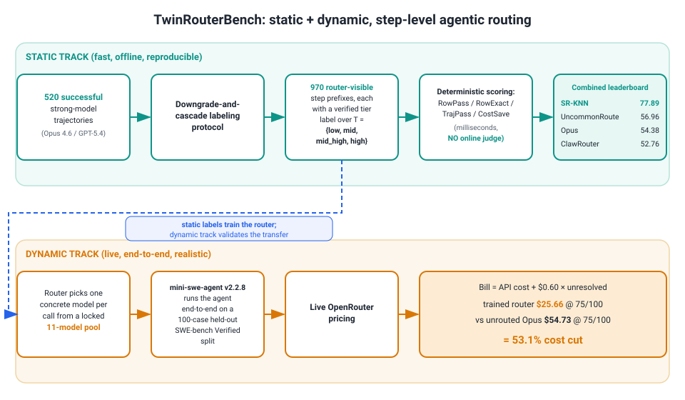
- STATIC track — 970 router-visible step prefixes drawn from 520 trajectories that a strong model already solved, across 5 workloads (SWE-bench, BFCL, mtRAG, QMSum, PinchBench). Scored by deterministic arithmetic in milliseconds over four metrics — RowPass / RowExact / TrajPass / CostSave — with no online judge, so it is fully reproducible and fast to iterate.
- DYNAMIC track — run routers end to end on SWE-bench Verified (
mini-swe-agent, live OpenRouter pricing). Report real resolve rate, realized spend, and a leaderboard bill = API cost + $0.60 per unresolved instance.
The labeling protocol (the slice you own)
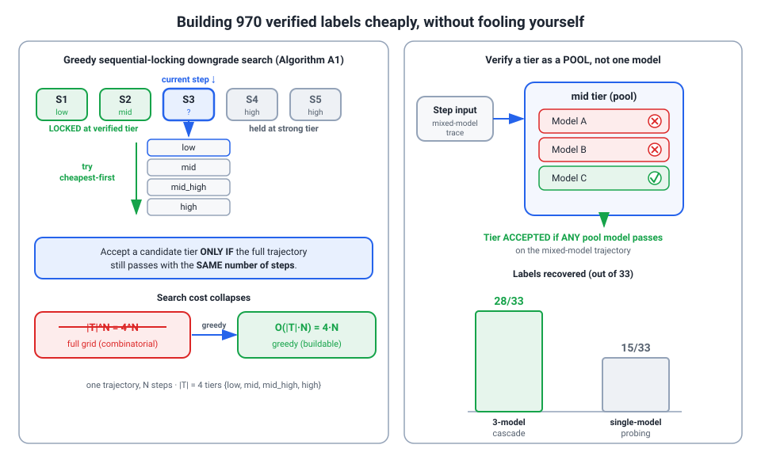
The hard problem is trustworthy labels — "cheapest tier that preserves success" — built cheaply without fooling yourself.
- Seed only from success. The downgrade question only exists when the task is solvable, so start from strong-model wins.
- Greedy sequential-locking search. Lock earlier steps at their verified tier, try the next step cheapest-first. This collapses the naive |T|^N grid (4-to-the-N reruns) to O(|T|·N) (4×N) — what makes the corpus buildable at all.
- Accept end-to-end. A tier is accepted only if the full trajectory still passes with the same step count — not just the one call.
- Verify a tier as a POOL of 3 models (accept if any passes), because within-tier model choice is noisy. This recovered 28/33 downgradeable labels vs 15/33 single-model.
- ~10% manual audit (64 steps) caught 1 further-downgradeable SWE step → 98.4% tight.
The numbers that matter
Static leaderboard. RowPass is gameable (689 of 970 rows are "low," so defaulting cheap scores well). RowExact is the honest column — Opus always-high earns only 17.53.
| Router | RowPass | RowExact | CostSave |
|---|---|---|---|
| SR-KNN (in-sample ceiling) | 91.86 | 78.76 | 56.18 |
| ClawRouter (rule-based) | 80.82 | 11.75 | 53.82 |
| Opus 4.6 (always-high) | 100 | 17.53 | 0.00 |
The failure-aware CostSave (variant E) charges failing trajectories their cost instead of crediting the "savings." That single change flips SR-KNN (56.18) above ClawRouter (53.82); variants A–D rank Claw above. You published the metric-sensitivity rather than burying it.
Dynamic headline. The trained router resolves 75/100 at $25.66 vs unrouted Opus 4.6's 74/100 at $54.73.
Saying the "53%" correctly
- It is 53.1% = 1 − 25.66/54.73: the trained UncommonRoute router vs unrouted Opus 4.6, at matched 75/100 resolve, on a 100-case held-out SWE-bench Verified split.
- It is a training-utility result on the dynamic track — evidence the static labels work as supervision. It is NOT "the benchmark cuts cost 53%."
- The number you should actually highlight: the trained router is 6.7× cheaper than the rule-based one ($25.66 vs $172.56) — learned routing beating hand-written rules.
Honest limitations (volunteer these)
- Survivorship by design. Labels seed from solvable tasks, so this measures routing headroom on solvable tasks, not absolute difficulty.
- Greedy may miss cross-step interactions — two individually-safe downgrades that jointly break the run. Partly guarded by the audit, not fully.
- Staleness is built in. Labels are tied to a frozen 11-model pool and a price snapshot; changing either is a new benchmark version, not a patch.
How to say it in the room: "It's a benchmark with two tracks, and the part I own is the labeling protocol — verified step-level labels by full-trajectory replay. The famous 53% is a downstream training-utility check on the dynamic track, not the contribution."
Paper 2 · MERA — routing safely inside a live agent
You are the third of seven authors here (byline "Tongyun Yang," Independent Researcher). The corresponding author is Tianyu Shi, and the affiliations are CMU, UCLA, Soochow, SJTU, and Gradient — there is no McGill, Tsinghua, or Tencent. If that old "cross-cultural China collaboration" story is in your head, drop it now.
The trap, stated first
There is one number that can sink this conversation: 87.3%. Say it the right way every single time:
87.3% is router-decision accuracy on an 832-example held-out set — how often the learned cheap-vs-strong decision matches the labels. It is not task accuracy. The agent is not answering 87.3% of tasks correctly.
The only task-quality number in the paper is the 1.5B student's MBPP pass rate, ~47.5% versus ~47.0% baseline — essentially flat, no cumulative gain. Volunteer the distinction before Versley forces it; he will catch a misread in one sentence.
The whole idea in one breath
MERA is two loops plus an admission gate, and its cleanest virtue is that cost and safety are decoupled: a router chases cost, a verifier protects quality.
Loop 1 — runtime
Before each agent invocation:
- An input-only router sees only the serialized prompt plus local context (not hidden agent state, not tool traces) and picks strong / cheap / optional 1.5B specialist (a Qwen2.5-Coder-1.5B LoRA adapter).
- A SkillBook may instead fire a stable template when the local structure matches a recurring signature — formatting, extraction, single-tool argument construction.
- A verifier then checks schema validity, tool-call legality, and executable tests. If it fails, the invocation falls back to a stronger model and logs the event.
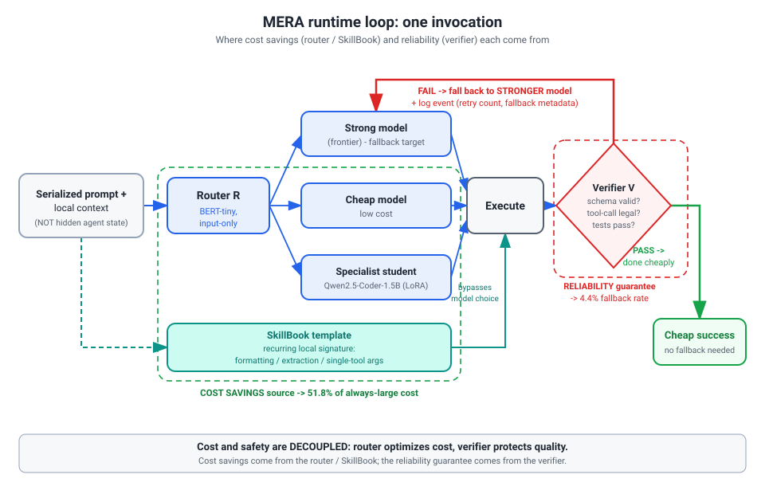
Cost savings come from the router/SkillBook; reliability comes from the verifier. That decoupling is the one-line summary to keep ready.
Loop 2 — offline
Complete traces are canonicalized into step slices (prompt, local context, tool schemas, output, verifier result, retry count, fallback metadata, skill assignment) and fed into three SEPARATE tracks over the shared traces:
- SkillBook stats — CPU-bound success/failure counts for recurring prompt signatures.
- A BERT-tiny router — trained on prompt text with weak-supervision cheap/strong labels.
- A Qwen2.5-Coder-1.5B LoRA adapter — GPU-heavy, trained with local GRPO on a hard-example pool (cheap-execution failures, or router/SkillBook disagreements).
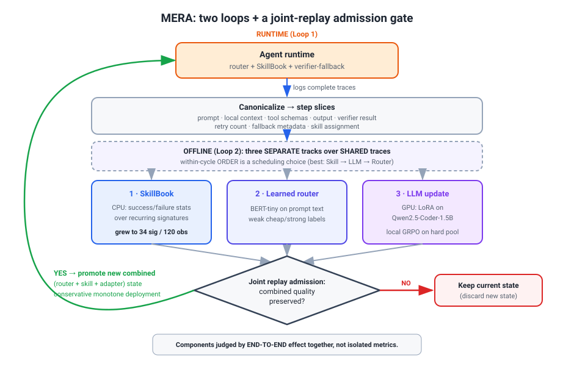
The admission gate — the real contribution
A new combined router/skill/adapter state is promoted only if a joint-replay evaluation shows end-to-end quality is preserved. Components are judged by their combined effect, not in isolation. Call this conservative, monotone deployment — it is the part to claim as the real contribution.
What is genuinely new (don't overclaim)
The router itself is a plain BERT-tiny classifier — not a clever new routing algorithm. The deltas versus RouteLLM / cascade work are exactly two:
- (a) invocation-level granularity inside a trace, instead of one route per task; and
- (b) joint, replay-gated admission of three heterogeneous tracks together.
The numbers worth memorizing
| Metric | Value | What it actually is |
|---|---|---|
| Best four-cycle router accuracy | 87.3% | Match to labels on 832 held-out examples — NOT task accuracy |
| Best four-cycle serving cost | 51.8% of always-large | Cost cut by 48.2% |
| Best four-cycle fallback rate | 4.4% | Verifier rejects and reruns on a stronger model |
| Ordering ablation span | 76.0% → 87.3% | Six orderings, four-cycle study |
| Eight-cycle stabilized band | 82–87% | Cycle-5 dip to 76.7% is a single-seed outlier |
| Only task-quality number | ~47.5% vs ~47.0% MBPP | The 1.5B GRPO adapter — flat |
Honest limitations
- Verifier coverage is load-bearing — a missed semantic failure means MERA overestimates how safe a down-route is.
- The GRPO adapter shows no cumulative gain — empirically the weakest component.
- Replay is not fully online — it can't perfectly capture the policy's own distribution shift.
- "At scale" overstates a 590-task code-gen feasibility study.
- Router labels are weakly supervised (circularity); the verifier-fallback is what keeps deployment honest.
How to say it in the room
"MERA routes inside a multi-step trace and only admits an update after joint replay shows quality held — cost from the router, safety from the verifier, decoupled. Mercury already runs many models per query, so this discipline is exactly what you'd want before pushing routing into a live multi-model agent. The open question I'd put to you: can we build a cheap, trustworthy verifier for e-commerce outputs, where there's no executable ground truth?"
Primer B · Diffusion models in eight minutes (read this before the next two papers)
Two of your papers — Diffusion Weights and Reverse Imaging — are creative riffs on the same machine. So spend eight minutes building that machine from zero. Once you can recite the template, both papers stop being scary and start being "oh, they just changed one part."
The core idea: noise it, then learn to un-noise it
Picture a real data point x0 — an image, a latent, a weight chunk. A diffusion model has two processes:
- Forward process: slowly add a little Gaussian noise at each of
Tsteps. After enough steps the data is gone —xTis indistinguishable from pure static. This part has no learning in it; it's a fixed recipe. - Reverse process: a neural network (usually a U-Net — an encoder-decoder with skip connections) learns to take a noisy
x_tand step one notch back toward clean data.
The payoff: start from random noise xT ~ N(0, I), run the learned reverse chain, and you generate a brand-new sample that never existed. That's it — that's generation.
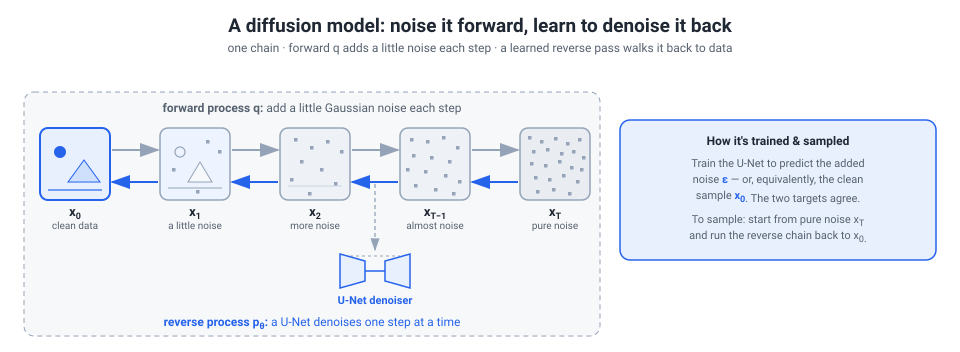
What does the network actually predict?
Two equivalent parameterizations — know both, because your papers split on this:
- Epsilon-prediction (
ε): the U-Net predicts the noise that was added. Subtract it off, you recover the data. x0-prediction: the U-Net predicts the clean sample directly.
They're algebraically equivalent — given the noisy x_t and the noise schedule, knowing one gives you the other. Memorize this: "x0-prediction = predict the clean target directly." Diffusion Weights uses exactly x0-prediction — with a twist you'll meet in a moment (the clean target it predicts is a future-epoch weight state, not the sample it was handed).
The score view (one sentence, big payoff)
A denoiser is, mathematically, learning the score — the gradient of log-density, ∇ log p(x), i.e. "which direction makes this more like real data." Why care? Because you can bolt a second gradient next to it. If you have a physics likelihood telling you "which direction makes this consistent with my measurement," you add the two and get guided sampling. That's the whole trick Reverse Imaging exploits — drive a diffusion spin-property prior (over PD/T1/T2 maps) with the Bloch physics forward model, so guided sampling recovers the spin maps that explain the measurement — which any sequence's forward model can then re-render into an image. (Note: the prior is not an image prior, and sampling lands on spin maps, not images.)
DDPM vs DDIM (one line)
- DDPM — the original stochastic sampler: many small noisy steps. Faithful, slow.
- DDIM — a deterministic sampler that reaches a sample in far fewer steps.
Both names show up in your papers; if asked, "DDPM is the original many-step stochastic chain; DDIM is the deterministic few-step accelerated version."
Upgrade 1 — LATENT diffusion (why it fits on one GPU)
Running diffusion on raw high-dimensional data is expensive. So compress first:
- A VAE (variational autoencoder) is just an autoencoder — an encoder squeezes data into a small latent, a decoder reconstructs it — but with a smooth, regularized latent (the KL / beta term penalizes a messy code).
- Run the entire diffusion process inside that small latent space, then decode the result back.
Because the latent is small and well-behaved (the beta term makes it a clean diffusion target, not arbitrary autoencoder garbage), the whole thing is tractable. This is precisely why Diffusion Weights can run on a single RTX 4090 — it diffuses over compressed weight latents, never raw 1.5B-parameter weights.
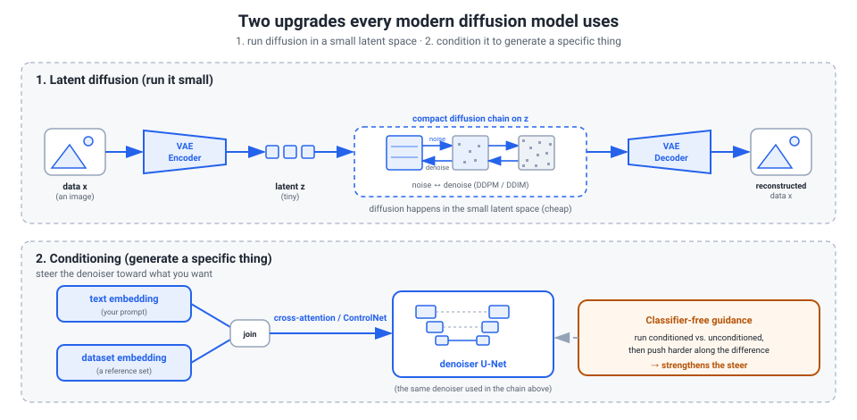
Upgrade 2 — CONDITIONING (generate a specific thing)
A raw diffusion model generates something random. To generate the thing you asked for, feed side information into the denoiser:
- A text embedding or a dataset embedding, injected via cross-attention.
- ControlNet — a popular adapter that injects conditions through zero-initialized convolutions, so at the start it adds nothing and training stays stable.
- Classifier-free guidance — the trick that dials up how hard the condition steers the output.
Diffusion Weights conditions on which task you're forecasting weights for (a dataset encoder + an LLM task embedding, ControlNet-style); Reverse Imaging conditions on the measurement.
The one-paragraph payoff (hold this template)
So a modern conditional latent diffusion model = compress with a VAE, add noise in latent space, train a conditioned U-Net to denoise toward a target, sample with DDPM/DDIM, decode. Hold that template — but treat the VAE-compress/decode slot as optional. Diffusion Weights uses it (it diffuses over compressed weight latents); Reverse Imaging skips it entirely and diffuses directly in spin-property space — no VAE, no latent compression. The next two papers are creative variations on just a couple of slots: the TARGET (Diffusion Weights makes it a future weight state) and the CONDITION (Reverse Imaging makes it a physics likelihood — that's its only twist; it leaves the VAE-latent slot empty).
Paper 3 · Diffusion Weights — the centerpiece, taught slowly
This is the paper Versley is most likely to dig into, because diffusion and pretraining are his world. So slow down and own it. Authorship first: this is a paper I'm an author on, currently under review at ACL — the PDF is anonymized for review, so never say "my accepted ACL 2026 paper." Say "under review."
Keep the conditional-latent-diffusion template from the primer in your head the whole way through: compress to a latent, condition on what you want, run a U-Net reverse chain in that latent. Diffusion Weights is exactly that template — and then it adds one creative twist that you must be able to name in your sleep.
The reframe: training as forecasting
Start with the intuition, because it sells the whole paper.
- SGD is wasteful with information. It computes a residual (a gradient step), takes one tiny step, and throws the trajectory away. Over a run you generate thousands of checkpoints and keep exactly one — the last.
- The image to use out loud: "It's like recording a whole movie and keeping a single frame, then trying to reconstruct the plot."
- The flip: instead of computing the next update, you generate a future weight state directly. You treat the training trajectory as data and learn to leap through it.
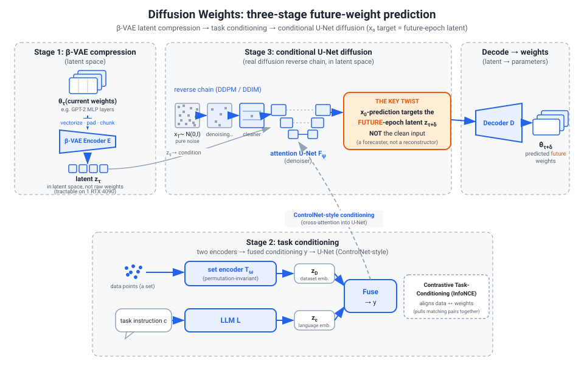
That figure is your map. Three stages — compress, condition, diffuse — then a merging step on top. Walk it in that order and you survive any drill-down.
Stage 1: compress the weights with a beta-VAE
Why a latent at all? You cannot run a diffusion U-Net over 1.5B raw weights on a single RTX 4090. So you make the problem tractable by shrinking it first.
A quick reminder of what a VAE is: an autoencoder that learns a smooth, probabilistic latent code rather than an arbitrary one. The beta term turns up the pressure toward a smooth, well-behaved latent — which matters because that latent becomes the thing diffusion has to model.
The mechanism, in order:
- Vectorize each layer's weight matrix (row-major).
- Pad to a multiple of a fixed chunk size.
- Split into contiguous chunks.
- Encode every chunk with a shared chunk-wise beta-VAE into compact latents.
Everything downstream happens in this latent space, never on raw weights.
The honest cost — name it before he does. Compression introduces a reconstruction floor. Theorem 3.1 bounds the global reconstruction error by sqrt(k) times the maximum per-chunk error over k chunks — so error can grow with chunk count. That, plus the fixed chunking, is a stated structural-bias limitation.
How to say it in the room: "I diffuse in a beta-VAE latent because a U-Net over 1.5B raw weights isn't feasible on one 4090; the beta term gives a smoother diffusion target than a plain autoencoder. The cost is a reconstruction floor — Theorem 3.1, error scales like root-k in the chunk count."
Stage 2: tell it which task (conditioning)
A forecaster that ignores the task is useless — you have to tell it which future you want. Two embeddings, fused.
- Dataset embedding
z_D. A permutation-invariant set encoder runs over class-conditional data subsets. Permutation-invariant means the output doesn't change if you reorder or resample the examples — order and count don't matter, only the distribution does. - Task/language embedding
z_c. An instruction-tuned LLM encodes the task description (the instruction text) into a vector. - Fuse them, then inject into the forecaster via cross-attention / ControlNet-style modulation (ControlNet = the standard trick for steering a frozen diffusion backbone with an external condition through zero-initialized adapters).
The glue is a Contrastive Task-Conditioning loss — CLIP-style InfoNCE — that aligns dataset embeddings with weight embeddings. Plain words: it pulls the right task toward the right region of weight space, so conditioning actually steers the generation instead of decorating it.
Stage 3: the conditional U-Net diffusion (the heart) — and the one nuance
Here is where you prove it's real diffusion, not a fancy name. Remember the conditional-latent-diffusion template — and here is the creative twist.
The genuine machinery (this is the textbook part):
- a standard Gaussian forward noising process that corrupts the target
x_0; - an attention U-Net as the reverse model, with a ControlNet zero-conv adapter plus LayerEmb / TimeEmb / TextEmb;
- x0-prediction — the network predicts the clean state directly;
- trained with a state loss
L_state = ||x_hat_0 - x_0||^2plus a chrono-aware temporal lossL_chrono; - inference runs the reverse chain from
x_T ~ N(0, I)with DDPM/DDIM sampling, then decodestheta_hat = D(x_0).
That is a real training objective and a real architecture. Nothing cosmetic.
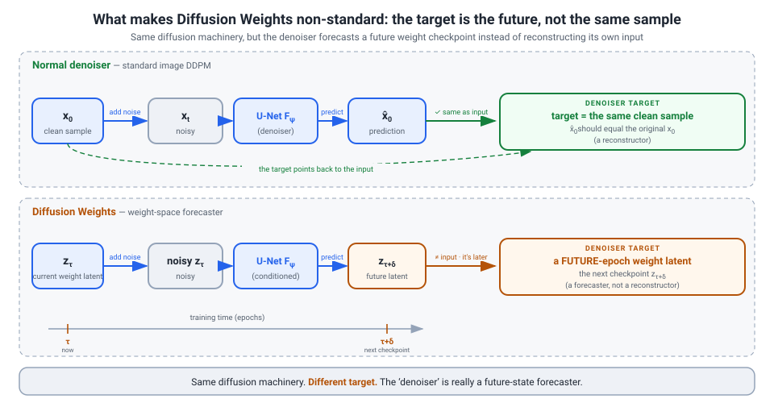
The nuance that makes it non-canonical — say it proactively, it's your credibility anchor. In a textbook denoiser, the x_0 target is the clean version of the very sample you corrupted. Here, x_0 is a future weight state — the next-epoch checkpoint — not the clean version of the noisy input. So the "denoiser" is really a future-state forecaster. Combine that with (a) operating in a VAE latent and (b) ControlNet conditioning, and you get the precise verdict: diffusion-inspired, real machinery, non-standard target — not a textbook DDPM, and not "just regression."
One more honesty point to volunteer: the intro's line about "treating SGD as a forward diffusion process" is motivational analogy. The implemented forward process is plain Gaussian noising, not the literal SGD trajectory. Flag it before he does; it reads as rigor.
Multi-Horizon Merging
One forecaster, three horizons. Predict x_0 at short / mid / long horizons, form task vectors delta = theta_hat_{tau+delta} - theta_tau, and merge in weight space:
- coefficients are nonnegative and sum to one (a convex combination — this is task-arithmetic / Model Soup territory; baselines are Model Soup and Greedy Soup, Wortsman et al. 2022);
- the convex constraint keeps the merged point inside the convex hull of the task vectors — the well-behaved region.
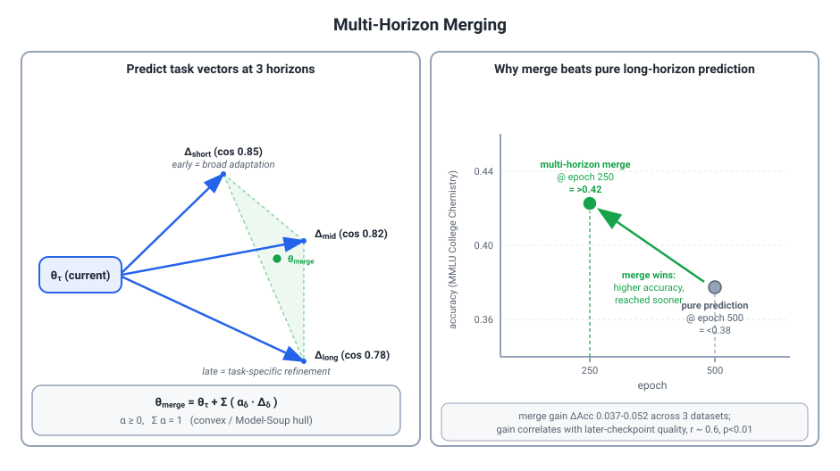
Why it works is two ideas:
- Phase complementarity — early checkpoints encode broad adaptation, late ones encode task-specific refinement, so merging captures both.
- Robustness — the long horizon is the hardest thing to predict, so composing reliable short predictions beats betting everything on one long forecast.
Evidence: the epoch-250 merge (>0.42) beats the epoch-500 pure prediction (<0.38); the merge gain is delta Acc 0.037–0.052 across three datasets; and the gain correlates with the later checkpoint's quality at r ~ 0.6, p < 0.01. Concede honestly that the coefficients are hyperparameters — it's a well-motivated heuristic, not a tight guarantee.
Does it actually work? the numbers
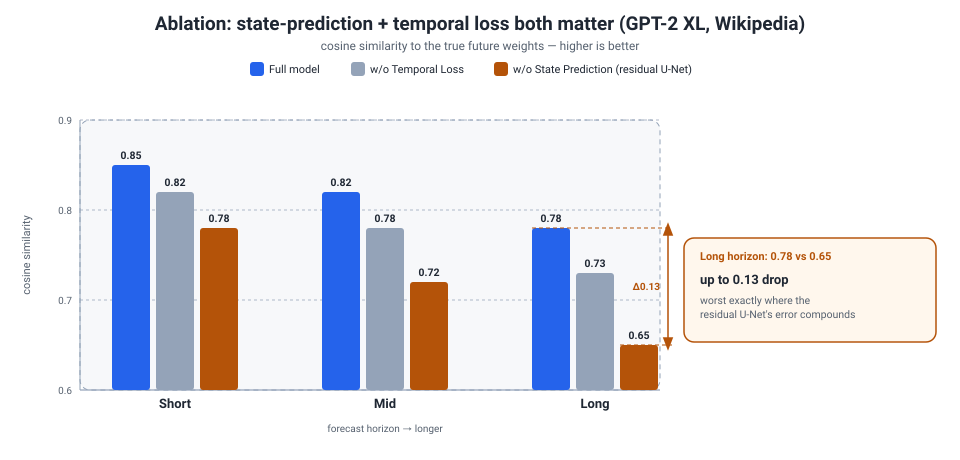
The speedup — name the discrepancy yourself. The numbers genuinely disagree across the paper, so own it rather than reconcile with invented math:
- ~3.2x is the conservative headline in the abstract and intro.
- ~3–4x is the implementation-details range.
- 3.8–4.3x is what Table 1 actually measures per task.
| Task | Wall-clock | Speedup |
|---|---|---|
| GLUE | 10h -> 2.5h | 4.0x |
| LAMBADA | 6h -> 1.6h | 3.8x |
| MMLU | 18h -> 4.2h | 4.3x |
| OpenBookQA | 8h -> 2.1h | 3.8x |
| WikiText | 24h -> 5.8h | 4.1x |
Quality is parity-or-improvement, not a deficit: WMT16 EN-DE is scored with TER, not BLEU — 117.17 vs 133.88 (-12.5%); OpenBookQA +2.9%; Winogrande +4.4%; PIGA weight variance -86%. (TER is concrete — don't say "I'd have to look it up.")
The ablation triplets are your strongest single piece of evidence. Full 0.85 / 0.82 / 0.78 versus a plain residual U-Net 0.78 / 0.72 / 0.65 — with the biggest drop on the long horizon.
Why it works (intuition)
- Residual prediction compounds error. Each predicted update feeds the next, so error accumulates over a long horizon. Predicting the destination
x_0in one shot sidesteps that compounding. - The residual ablation fails in exactly the predicted way — worst on the long horizon (
0.65), where compounding should bite hardest. That's not a coincidence; it's the design being confirmed. - Theorem 3.2 (a cosine-similarity lower bound) says directional correctness survives modest Euclidean error — which is what you actually need for a usable checkpoint. (Not Aghajanyan intrinsic dimensionality — that was an old wrong claim; do not say it.)
Amortized, not free
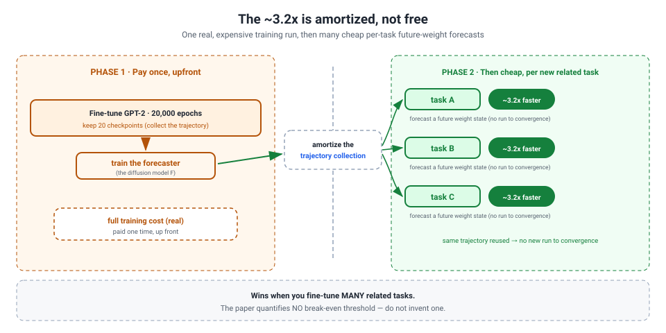
This is the killer follow-up, so pre-empt it. The acceleration is amortized, not free: you still fine-tune GPT-2 for 20,000 epochs and keep 20 equidistant checkpoints to train the forecaster. The win is per new related task — forecast cheaply instead of training to convergence. The paper does not quantify a break-even, and you must not invent one (the old "45–60 jobs" figure is fabricated).
The four questions you must nail
One crisp answer each — then point to doc 20 for the full Q&A.
- Is it really diffusion? Yes on the machinery — real Gaussian forward process, DDPM/DDIM reverse chain, attention U-Net denoiser. Non-canonical because
x_0is a future weight state in a beta-VAE latent with ControlNet conditioning. Don't overclaim "real DDPM"; don't overcorrect into "just regression." - Where does the 3.2x come from? ~3.2x is the conservative headline; Table 1 measures 3.8–4.3x. The exact 3.2x derivation isn't reconstructible from the paper — own the gap rather than invent math.
- Why predict
x_0, not the residual? Residuals compound error over the horizon; predicting the destination sidesteps it — and the residual ablation fails worst on the long horizon, exactly as predicted. - Why a beta-VAE latent? Tractability (no U-Net over 1.5B raw weights on one 4090) plus a smoother diffusion target. The exact latent dim and chunk size are appendix-deferred — point there, do not guess.
Honest limitations
State these before he digs — volunteering failure modes is the move with this interviewer.
- MLP-only. It predicts only MLP-layer weights; attention is still trained normally. Frame it as why the wall-clock numbers are believable — attention isn't assumed free. It does not predict attention projections (old fabrication).
- Amortized, not free — pays off over many related tasks; no break-even in the paper.
- Scale unvalidated. Everything is GPT-2 up to 1.5B on one 4090; scaling is explicit future work. Call it a proof-of-concept, not a production claim. (No 7B / LLaMA / Mistral results, no 312-run corpus, no corrective SGD steps — all fabrications.)
- Assumes consistent training dynamics — can fail under curriculum learning, optimizer switching, or large in-run distribution shift.
- "First to…" is positioning, not measurement — flag it as such; Versley treats unearned "first" claims as a red flag.
How to say the diffusion question in the room: "It's diffusion-inspired with real diffusion machinery — a genuine Gaussian forward process, a DDPM/DDIM reverse chain, and an attention U-Net denoiser. What makes it non-canonical is the target: I use x0-prediction where x0 is a future weight state — the next-epoch checkpoint — not the clean version of the noisy input, operating in a beta-VAE latent with ControlNet-style conditioning. I wouldn't call it a textbook DDPM over weight space, and the 'SGD as forward diffusion' line in the intro is motivational analogy, not the implemented math."
Paper 4 · Reverse Imaging — diffusion as a physics inverse problem
This is the paper where the diffusion primer pays off: it reuses the exact score / guided-sampling machinery you just learned, but points it at MR physics instead of pixels. You are 4th of 8 authors here (printed as Tongyun Yang). The lead is Yidong Zhao; the corresponding author and supervisor is Qian Tao at TU Delft. It is an arXiv preprint from Aug 2025, written in MICCAI/LNCS workshop style — say "preprint," and never call it MICCAI 2025 or an IEEE-TMI paper. That was a fabrication in the old prep.
The problem, in plain terms
Cardiac MRI segmentation models are almost always trained on bSSFP cine (the standard "bright-blood" movie). They fall apart on other sequences — MOLLI T1-mapping, GRE — because the contrast is completely different. MOLLI can even invert the blood-to-myocardium contrast, so the heart looks nothing like what the model trained on. This is cross-sequence, not cross-vendor: plain intensity augmentation handles a different scanner, but it cannot manufacture a different physics.
The key insight
The genuinely sequence-invariant "content" of an MR image is not its appearance — it is the underlying tissue spin properties z = (PD, T1, T2) (proton density, and the two relaxation times). Every sequence is just a different Bloch forward model f_i applied to the same z. So instead of translating image-to-image, you run the physics backwards: infer z from one image, then re-render any sequence by applying its forward model.
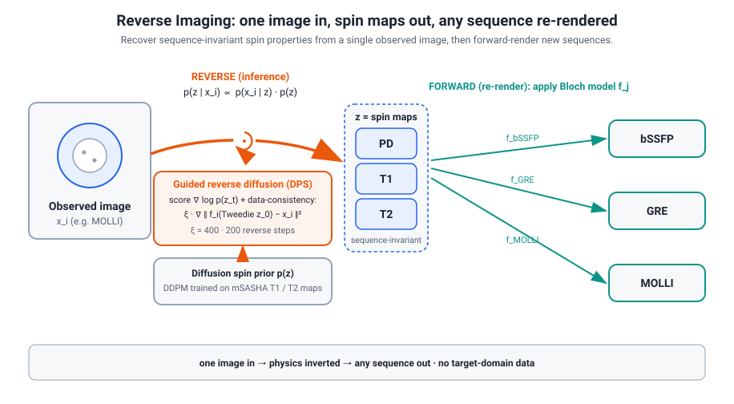
The mechanism as a clean inverse problem
Read it straight off the primer — same three ingredients, new latent:
- Likelihood = physics. The forward model is the Bloch signal equation: an image is
f_i(z). Solog p(x|z) ∝ -||f_i(z) - x||²— pure measurement consistency, no learned weights. - Prior = a DDPM in spin space.
p(z)is a diffusion model trained on real T1/T2 maps; the denoiser hands you the score∇ log p(z), exactly the object guided sampling needs. - Posterior.
p(z|x) ∝ p(x|z) · p(z). Recovering three maps from one qualitative image is ill-posed and nonlinear — name that tension yourself. - Guided inference is DPS. This is diffusion posterior sampling: at each reverse step add a data-consistency gradient built on a Tweedie one-step estimate
ẑ₀of the clean spin maps, render it throughf_i, compare to the observed image, backprop.
Say the novelty plainly: the sampler is off-the-shelf DPS. What is new is what you plug into it — a physical latent (the spin triplet) and a nonlinear Bloch measurement operator, not a linear blur or k-space mask.
Two usages
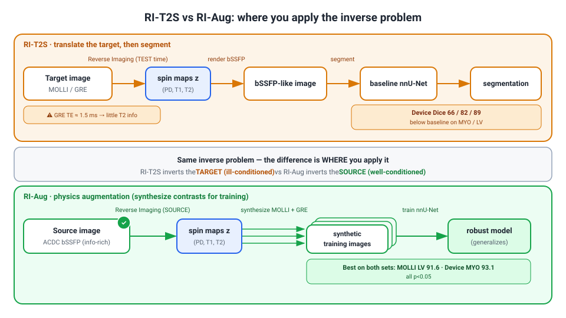
- RI-T2S — translate a target image (MOLLI/GRE) back to bSSFP through
z, then segment with the bSSFP model. - RI-Aug — invert the information-rich bSSFP source and synthesize MOLLI/GRE contrasts to augment training.
Crucially, neither needs any target-domain data.
The headline numbers
| Setting | Baseline → RI-Aug |
|---|---|
| MOLLI LV Dice | 39.9 → 91.6 |
| Device MYO Dice | 86.9 → 93.1 |
RI-Aug is best on both eval sets, and every RI-Aug gain is significant at p < 0.05. The honest failure: RI-T2S drops below baseline on the device GRE set, because GRE's ~1.5 ms echo time minimizes T2 weighting and starves the inverse problem of signal. The rule: translate when the target image is informative; augment when it isn't — augmentation is the robust default.
Honest limitations (volunteer these)
- The recovered spin maps are "approximate but meaningful" — never validated as quantitative T1/T2 (no ms/% error reported).
- A load-bearing flip angle (45°) was guessed for ACDC, with no sensitivity ablation.
- Small cohorts, small spin prior; it's a preprint.
How to say it in the room: "We repurpose diffusion posterior sampling from image reconstruction into sequence translation — the latent is the physical spin triplet, the operator is the nonlinear Bloch equation, and we never claim quantitative maps, only contrast realistic enough to augment."
Portable lesson: when you can write down the forward process of your domain, you can run it backwards with a diffusion prior and generate the distribution you cannot collect.
Your two first-author papers — sixty seconds each (you know these; here is the clean anchor)
These two are yours — you led them, so own them plainly, including the absences. Here is the corrected anchor for each.
1. Pruning nnU-Net (MIDL 2025, first author)
Headline, said correctly: one-shot magnitude-threshold pruning — train the model to convergence, then zero every weight below a fixed threshold, no retraining — removes over 80% of a trained nnU-Net's weights while proxy Dice stays above 0.95 across four medical-imaging datasets.
- Proxy Dice = agreement between the pruned and the unpruned model, not accuracy against ground truth. Say "proxy," every time.
- No measured speedup. Unstructured pruning leaves zeros you still store and multiply, so efficiency is framed as future work. Never say "99% sparsity" or "6x."
- The real finding is the inverted-U redundancy map: the bottleneck and deep layers hold the most parameters but are the most prunable; the encoder and decoder ends hold the critical weights. Consistent across all four datasets.
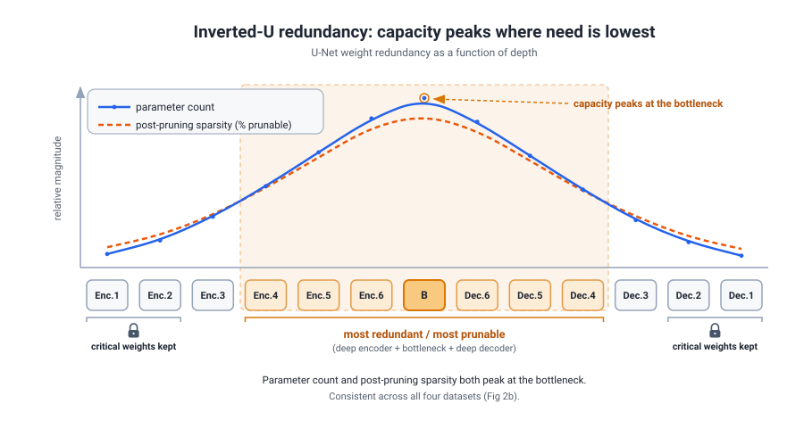
In the room: "First-author MIDL 2025 short paper. One-shot magnitude pruning, over 80% of weights gone at proxy Dice above 0.95 across four datasets — and the real finding is the inverted-U. I measured redundancy, not speedup."
2. Eye-Tracking Emotion in VR (IMWUT 2025, co-first with Bishwas Regmi)
Headline, said correctly: the first VR emotion dataset to capture raw high-frame-rate periocular video (the micro-expressions around the eye) alongside gaze and pupil at 4x the usual frequency, with discrete Ekman emotion labels.
- The benchmark is a multi-faceted fusion model, not gaze-only. A ViViT reads the periocular video, a time-series transformer reads the eye-movement, and a self-attention encoder fuses the tokens before a 7-way softmax.
- The lift: fusing periocular video with eye-movement raises cross-session F1 from 0.54 (periocular-only) to 0.70. Eye-movement alone is the weakest path.
- The honest dip: at a 0.5s window, fusion (0.43) slightly loses to periocular-only (0.45) — the eye-movement stream needs a minimum time budget. That's a temporal-budget finding, not a bug; volunteer it.
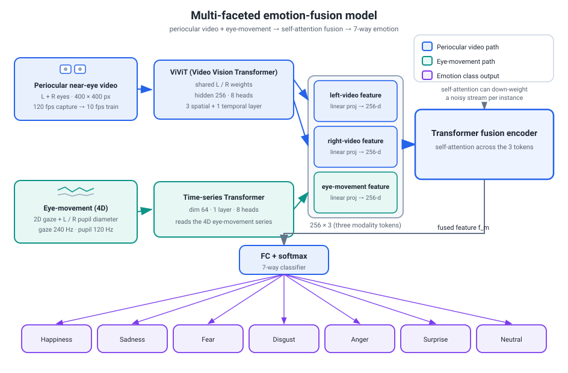
In the room: "First author, Bishwas Regmi co-first. The first dataset with raw periocular video plus 4x-frequency gaze and Ekman labels; fusion lifts cross-session F1 from 0.54 to 0.70."
The through-line
Both are the same efficiency discipline — compress hard, then find the saturation point where the metric stops moving — aimed at another domain. For the exact Q&A and every number, see "Own Papers — Ground-Truth Defense."
Putting it together
Four papers, one thesis: AI moved from a scaling race to a systems race. You do not win by training a bigger model — you win by spending a fixed model budget well. TwinRouterBench measures step-level routing honestly; MERA does it safely inside a live agent; Diffusion Weights forecasts the optimization you would otherwise pay for; Reverse Imaging synthesizes the data distribution you cannot collect. That arc maps directly onto Versley's own efficiency-over-scale world — which is the rapport you want.
For the exact figures, the byline/venue facts, and the full skeptical Q&A on each paper, see Own Papers — Ground-Truth Defense; for the one-screen banned-phrase cram, the Kill List; and for the consolidated essentials, the Final-Hours Must-Read.